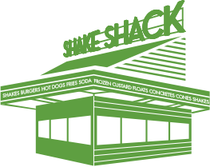

쉐이크쉑은 뉴욕 메디슨 스퀘어 공원 복구 기금 마련을 돕고자 시작한 USHG의 여름 이벤트에서 우연히 시작되었습니다.
매년 여름 많은 쉑 팬들이 핫 도그 카트 앞에 길게 줄을 설 정도로 인기를 끌면서 2004년, 쉐이크쉑 이라는 이름의
간판을 달고 공원 내에 키오스크 매장을 열었습니다.


쉐이크쉑은 프리미엄 식재료를 사용한 클래식 아메리칸 스타일의 메뉴를 제공하는 파인 캐주얼 레스토랑입니다.
프리미엄 버거, 플랫탑 도그, 크링클 컷 프라이, 신선한 커스터드, 에일 맥주, 와인 등을 함께 즐길 수 있을 뿐만
아니라 쉑에 방문한 모든 분들을 내 집에 머물러 온 게스트로서 응대하며 따뜻한 호스피탈리티를 제공합니다.
이처럼 쉐이크쉑은 늘 활기가 넘치고 긍정적인 분위기가 가득한 사람들의 커뮤니티 개더링 공간입니다.